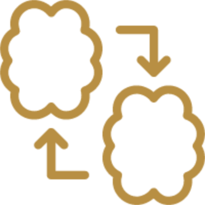

<mat-sidenav-container class="sidenav-container">
  <mat-sidenav #drawer class="sidenav" fixedInViewport
      [attr.role]="(isHandset$ | async) ? 'dialog' : 'navigation'"
      [mode]="(isHandset$ | async) ? 'over' : 'side'"
      [opened]="((isHandset$ | async) === false) && false">
    <mat-toolbar>ابحث...</mat-toolbar>
    <mat-nav-list>
      <a mat-list-item href="#">تصفح المشاريع</a>
      <a mat-list-item href="#">أضف مشروع</a>
      <a mat-list-item href="#">سجل</a>
    </mat-nav-list>
  </mat-sidenav>
  <mat-sidenav-content>
    <mat-toolbar color="primary">
      <button
        type="button"
        aria-label="Toggle sidenav"
        mat-icon-button
        (click)="drawer.toggle(); open = !open"
        *ngIf="(isHandset$ | async) || true">
        <mat-icon aria-label="Side nav toggle icon" class="burger" [ngClass]="open && !(isHandset$ | async) ? 'rotate-burger' : ''">menu</mat-icon>
      </button>
      
      <span class="logo-text">ساهم</span>
    </mat-toolbar>
    <!-- Add Content Here -->
  </mat-sidenav-content>
</mat-sidenav-container>
